龙与幻想
少年在金色树影下，最后一次俯望自己的家乡。
白垩与微风的史诗碑文
在古老的泰坦史诗中，世界树的根须联结着天空与深渊。当巨大的龙翼划过白垩之都的尖塔，微风平原上的风车便开始日复一日地将金色的日光纺织成成篇的传说。
你将扮演从微风平原走出的少年，携带着刻有古老铭文的罗盘，在晨光与暮色交替的无尽旷野中，寻找失落的龙之契约。
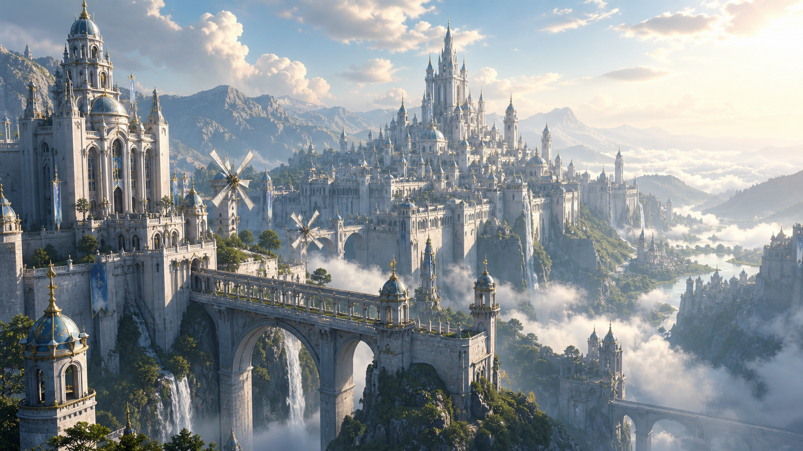
命运之契 · 遗迹塔罗
点击下方神秘的古代星海塔罗卡牌，在 3D 魔法光圈与仪式感流光中，揭开背后的巨龙誓言与神圣传说！

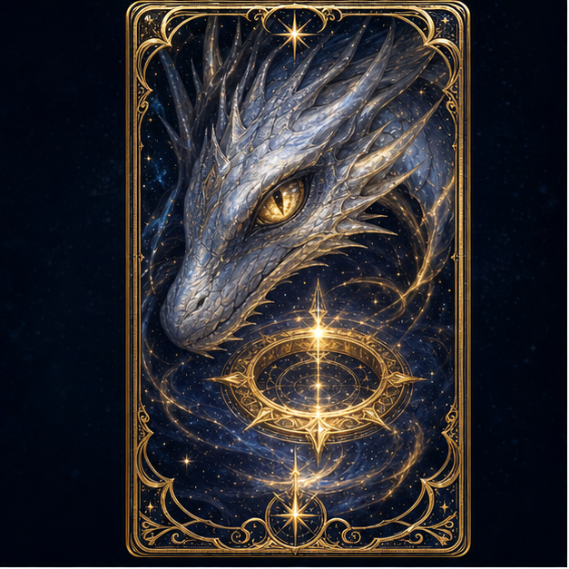
白金巨龙之契
在秋叶纷飞的世界树谷地，少年与沉睡的白金古龙立下灵魂誓言，获得了风与光的至高加护。
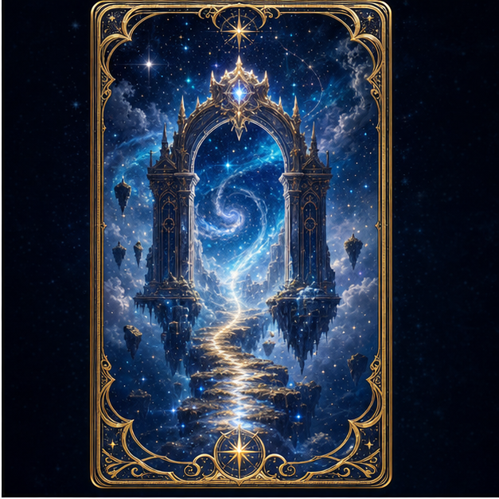
星海奥境之门
矗立于云端悬崖之巅的白垩石门，连接着通往无尽极光与深邃星海的古代神域秘径。
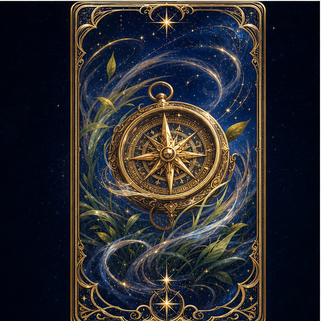
微风罗盘
刻有炼金铭文的古代罗盘，永远指向微风流动之处与失落王冠埋藏的星夜旷野。
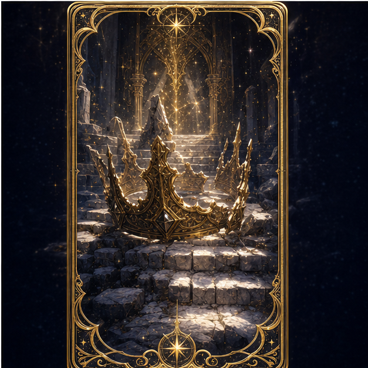
失落王冠
白垩王朝开国元老留下的星辉王冠，象征着统御深渊与重整大陆秩序的无上权能。
白垩星图 · 探索情报档案
点击地图上闪烁的共鸣坐标，解锁大陆各处高精度奇观档案与实景侦察报告！
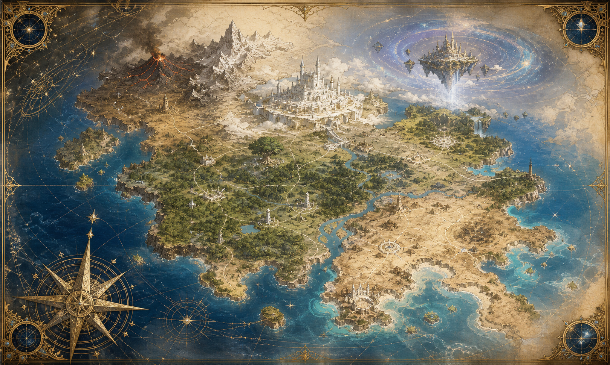
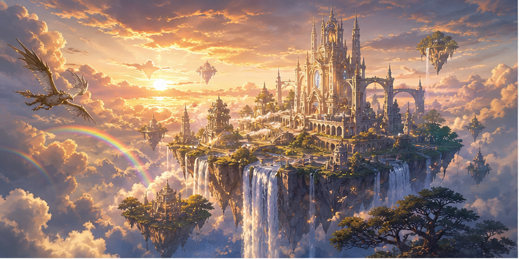
云端悬浮圣殿 (Sky Sanctuary)
矗立在云海之上，由绚丽彩虹桥与垂天瀑布相连的高空圣殿。唯有最无畏的炼金空艇船长，方能抵达这片沐浴在神圣日光下的空中奇迹。
命运羁绊 · 同伴登场
无论是命运的开拓者、聆听星轨的观星法师，还是誓死守护晨曦的近卫，他们的轨迹皆在此汇聚。
主角 · 命运开拓者
“如果远方没有恶龙，我们便去追寻未曾见过的星海与日落。”
- 定位： 全能开拓者 / 龙契者
- 武器： 古代命运断剑
- 元素： 星辉 & 晨光
蕾娅 (Leia)
“风吹过来的地方，不仅有故事，还有深埋在遗迹深处的星辉。”
- 定位： 皇家观星首席
- 武器： 星轨至高法杖
- 元素： 星穹 & 幻水
艾尔 (Al)
“只要手中有剑，目光所及之处，皆是守护王城的道路。”
- 定位： 白垩近卫骑士团长
- 武器： 晨曦破晓剑
- 元素： 微风 & 雷霆
白垩与微风的沉浸画廊
点击鉴赏 AAA 级电影海报与场景原画，体验全屏沉浸式艺术展海报观赏模式。
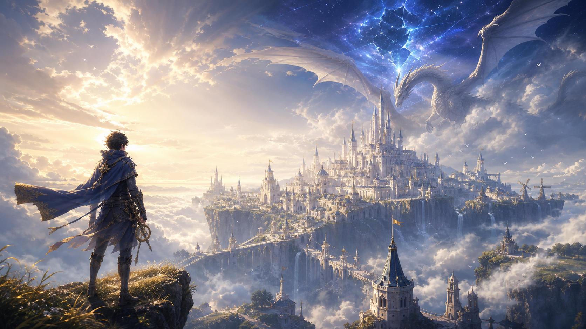
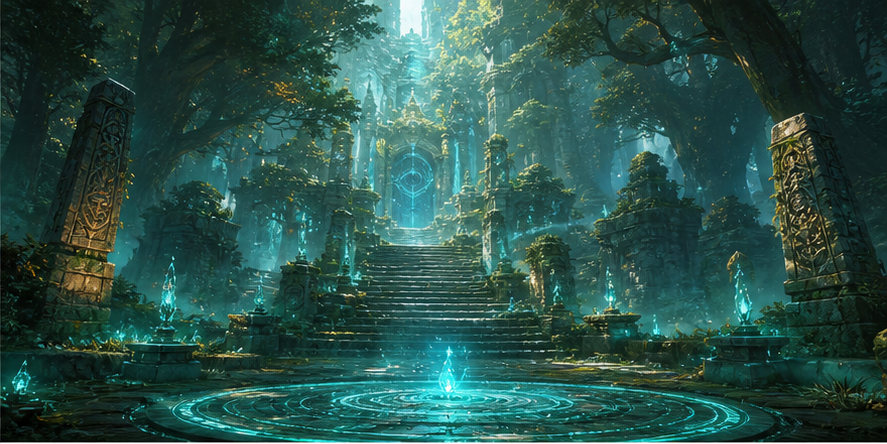
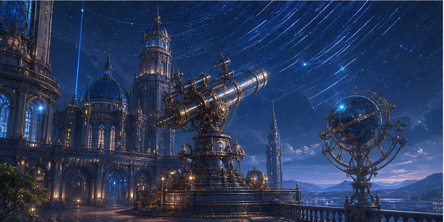
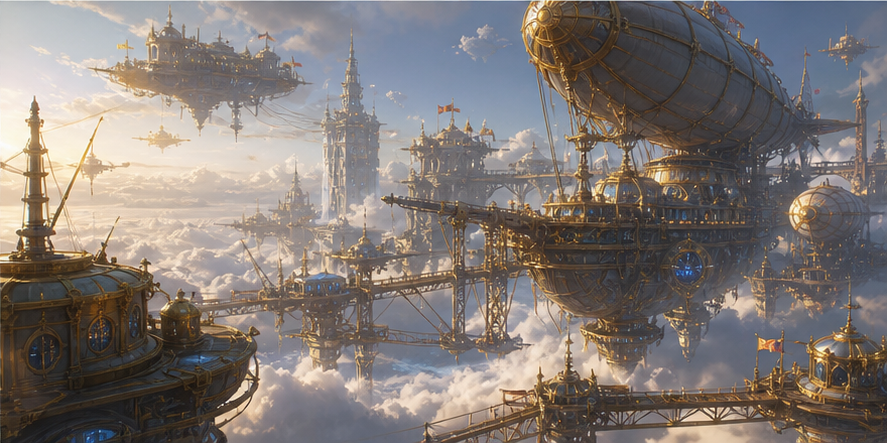
启程！全球公测预约开启
立即预约，即可在公测时领取限定飞行同伴「星光青鸟」、白垩专属头像框及 1000 颗星辉宝石！